빈 Supabase 프로젝트에 uEngine ERP를 설치하고, 판매 모듈 하나로 거래처와 제품, 견적, 주문까지 만듭니다.
무엇을 · 왜#
uEngine ERP는 판매 모듈 하나로 시작해 회사가 성장하는 만큼 재고·구매·청구·회계 모듈을 더하는 ERP입니다. 앱은 정적 파일이고, 데이터와 업무 규칙은 내 Supabase 프로젝트의 Postgres 안에 있습니다. 따라서 사용자와 제공자 모두 서버를 따로 운영하지 않습니다.
| 모듈 | 하는 일 | 켜면 사용할 수 있는 예측·what-if |
|---|---|---|
| 판매 | 거래처, 제품, 가격표, 견적, 주문 | 지역·제품·시즌 통계, 수요 예측, 단종(범위) |
| 재고 | 창고, 입출고, 재고 조정, 재주문 규칙 | 품절 예상일, 발주 정책 변경, 창고 재배치, 단종(대체율 추정) |
| 구매 | 견적 요청, 구매 주문, 입고 | 실측 납기, 발주 필요 예측, 납기·공급사 변경 |
| 청구 | 청구서, 대변 메모, 입금 | 입금 예측, 결제 조건 변경 |
| 회계 | 분개, 시산표, 손익, 재무상태 | 손익 전망 |
먼저 알아 둘 것
- 가온가전은 가상 회사입니다. 이 튜토리얼의 수치는 모두 가상 회사의 것이고, 실제 고객이나 실제 성능을 나타내지 않습니다.
- 이 튜토리얼의 화면은 내 컴퓨터의 로컬 Supabase에서 찍었습니다. 그래서 주소가
http://127.0.0.1:56321로 보입니다. 클라우드 프로젝트로는 아직 끝까지 확인하지 못했습니다. 확인하지 못한 단계는 아래에서 각각 밝힙니다. - 무료 플랜에서의 속도는 측정하지 않았습니다. 앱이 보여 주는 무료 플랜 안내는 데이터베이스 500 MB, 자동 백업 없음, 7일 동안 활동이 없으면 일시 중지입니다.
- 서버가 필요한 기능도 있습니다. 메일 발송, 결제, 전자세금계산서, 은행 연동은 포함하지 않습니다. 필요하면 내 프로젝트의 Edge Function으로 연동합니다.
이 튜토리얼의 장은 이렇게 이어집니다.
| 장 | 내용 |
|---|---|
| 설치하고 판매로 시작하기 | 접속 정보, 설치 SQL, 회사 만들기, 첫 주문 (이 장) |
| 재고를 켜고, 고장 나도 판매는 계속 | 모듈 켜기, 이벤트로 이어지는 출고, 구독 고장과 복구 |
| 구매·청구·회계 켜기 | 재주문 규칙에서 입고까지, 청구서에서 시산표까지 |
| 과거 시점 보기와 되돌리기 | 이력 슬라이더, 회사 전체 시점 보기, 모듈을 넘는 되돌리기 |
| 예측과 what-if | 모델의 세 상태, 수요 예측, 다섯 가지 what-if |
| 플러그인과 REST·MCP 연동 | SQL 파일 하나로 설치하는 플러그인, 연동 키, 외부 호출 |
1장부터 3장까지는 같은 회사를 이어서 씁니다. 4장부터는 3년치 기록이 있는 가상 회사를 씁니다.
따라 하기#
준비물은 Supabase 프로젝트 하나입니다. 무료 플랜으로 만들면 됩니다. 프로젝트 위쪽의 Connect를 누르면 Project URL과 Publishable 키가 함께 보입니다.
앱은 https://uengine-oss.github.io/uengine-erp/에서 엽니다. 설치할 것이 없습니다. 이 튜토리얼의 녹화는 같은 앱의 빌드를 내 컴퓨터에서 열어 찍었습니다.
- 접속 정보 넣기. 앱을 처음 열면 Supabase 프로젝트 연결 화면이 나옵니다. Project URL과 Publishable 키 (공개 키)를 넣습니다.
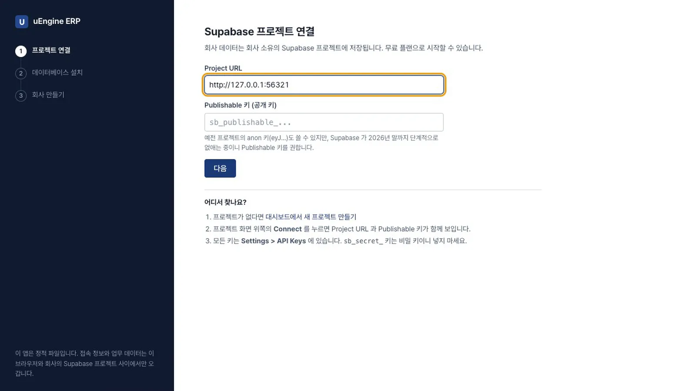
프로젝트 연결 - 비밀 키는 넣지 않습니다.
sb_secret_으로 시작하는 키를 넣으면 앱이 네트워크로 보내지도, 저장하지도 않고 바로 거부합니다. 공개 키를 넣고 다음을 누릅니다.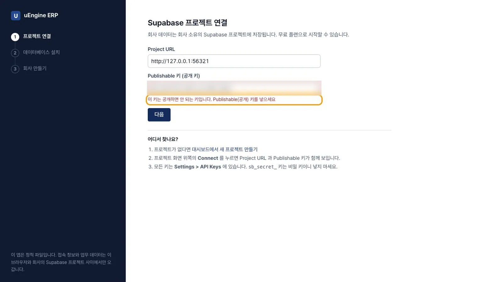
비밀 키 거부 - 설치 SQL 복사. 공개 키로는 표를 만들 수 없어서 SQL을 한 번 직접 실행해야 합니다. SQL 복사를 누릅니다. 이 녹화에서 복사한 SQL은 836 KB이고, 이번 설치에만 쓰는 코드가 들어 있습니다.
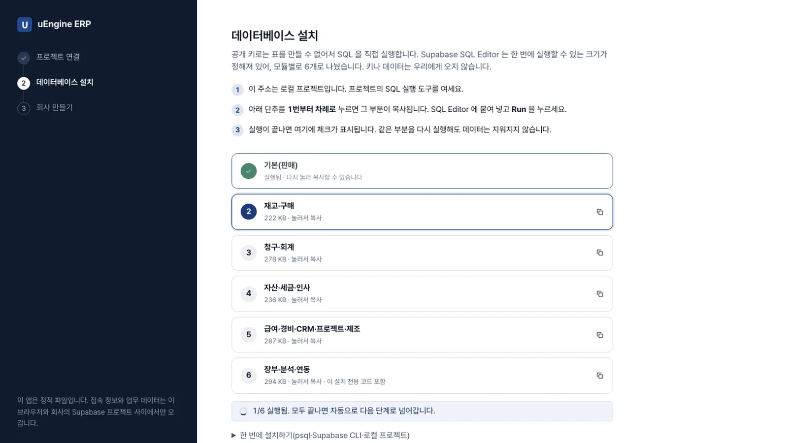
데이터베이스 설치 - SQL 실행. 클라우드 프로젝트라면 이 프로젝트의 SQL Editor 열기를 눌러 붙여 넣고 Run을 누릅니다. 여러 번 실행해도 데이터는 지워지지 않습니다. 실행이 끝나면 앱이 자동으로 감지하고 다음 단계로 넘어갑니다. !!! note "아직 확인하지 못한 단계" 이 튜토리얼의 녹화에서는 로컬 프로젝트라서 복사한 SQL을 데이터베이스에 바로 실행했습니다. 대시보드의 SQL Editor에 836 KB를 붙여 넣어 실행하는 것은 아직 클라우드에서 확인하지 못했습니다. 무료 플랜에서 끝까지 실행되는지도 측정하지 않았습니다.
- 회사 만들기. 실제 회사로 시작을 고릅니다. 판매 모듈이 켜진 빈 회사가 됩니다. 회사명(
가온가전), 통화(KRW), 관리자 이름(김대표), 관리자 이메일, 비밀번호를 넣고 회사 만들기를 누르면 메일 인증 없이 바로 로그인됩니다. 통화의 소수 자릿수는 설치 후 바꿀 수 없습니다. 가상 회사(가온가전)로 먼저 체험하기를 고르면 3년치 판매·재고·구매·청구·회계 기록을 실제 명령으로 만듭니다. 데이터베이스 공간을 약 250 MB 사용하며, 생성에는 몇 분 걸립니다. 4장부터 쓰는 회사가 이것입니다. 지어낸 데이터이므로 실제 업무는 새 프로젝트로 시작하세요.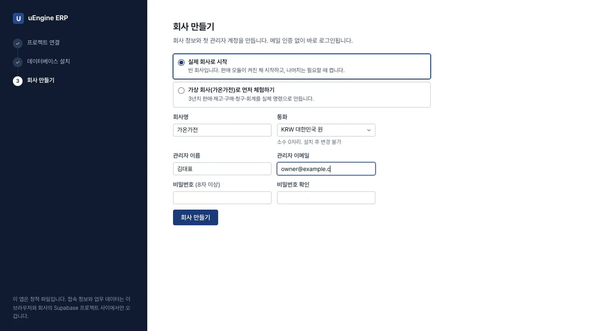
회사 만들기 - 모듈 화면 보기. 설정 → 모듈을 엽니다. 판매만 켜짐이고 재고, 구매, 청구, 회계는 꺼짐입니다. 카드마다 무엇을 다루는지, 켜면 무엇이 열리는지 적혀 있습니다.
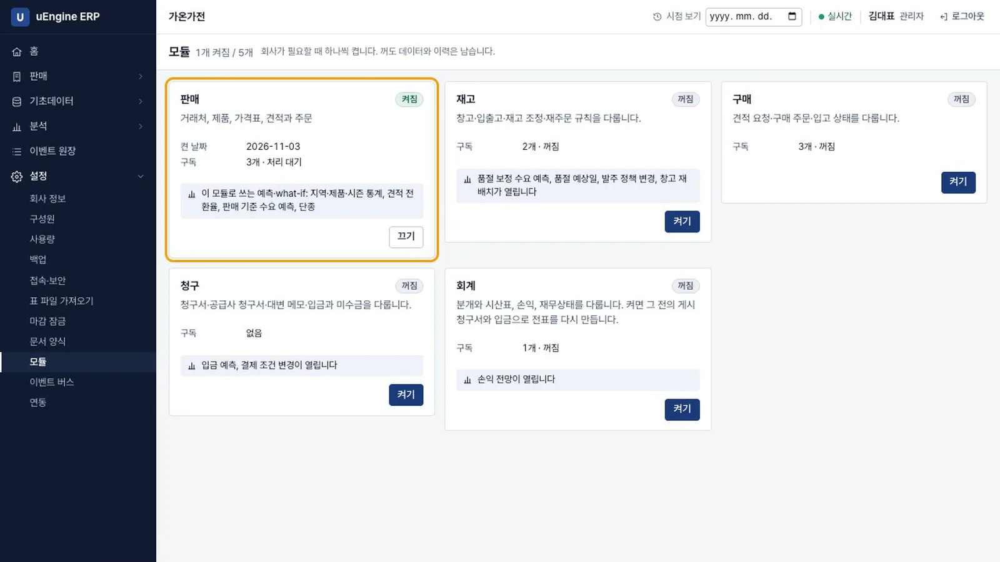
모듈 화면 - 메뉴 보기. 왼쪽 메뉴에 재고·구매·청구·회계가 없습니다. 판매를 펼치면 견적·주문, 견적 양식, 연락처, 제품, 가격표, 제품 카탈로그가 보입니다.
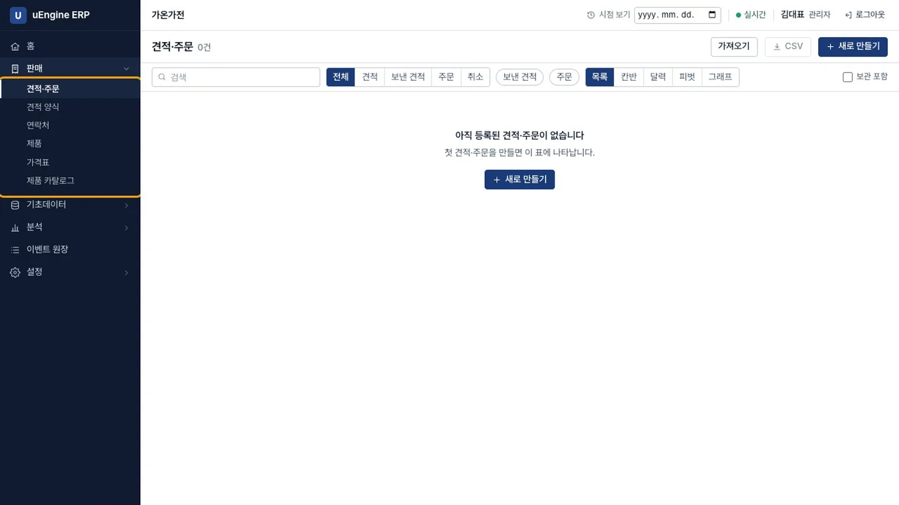
판매 메뉴 - 거래처 만들기. 연락처 → 새로 만들기에서 구분을 회사로, 이름을
가온마트, 지역을수도권으로 넣고 저장을 누릅니다.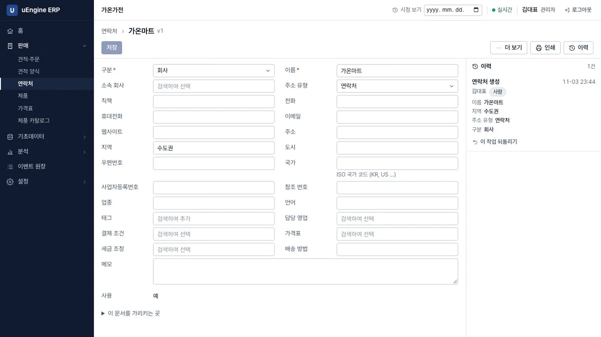
거래처 - 제품 만들기. 제품 → 새로 만들기에서 제품명
에어서큘레이터, 판매가89000, 원가52000을 넣고 저장을 누릅니다.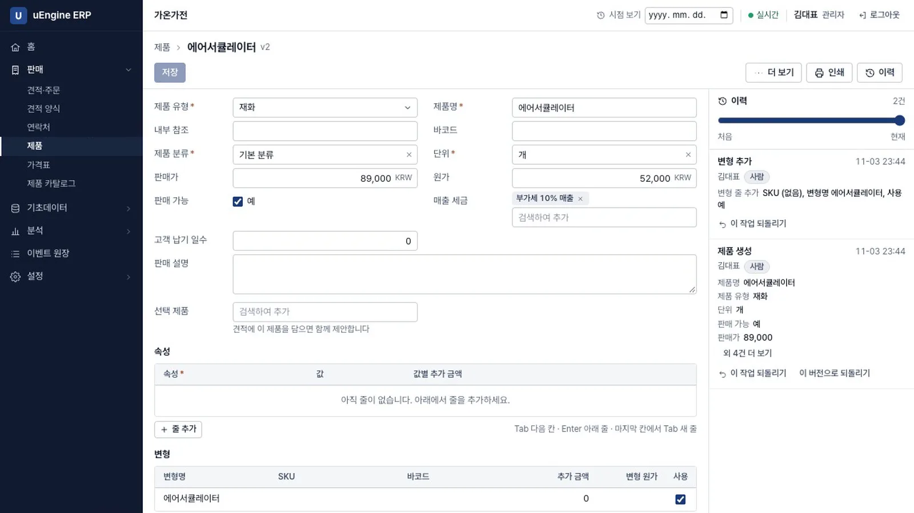
제품 - 영업 담당자 추가. 설정 → 구성원 → 직원 추가에서 이름
박영업, 이메일, 초기 비밀번호(8자 이상)를 넣고 역할에서 영업을 켜고 조회를 끕니다. 메일을 보내지 않고 관리자가 계정을 만듭니다. 만든 뒤 로그아웃하고 그 계정으로 로그인합니다.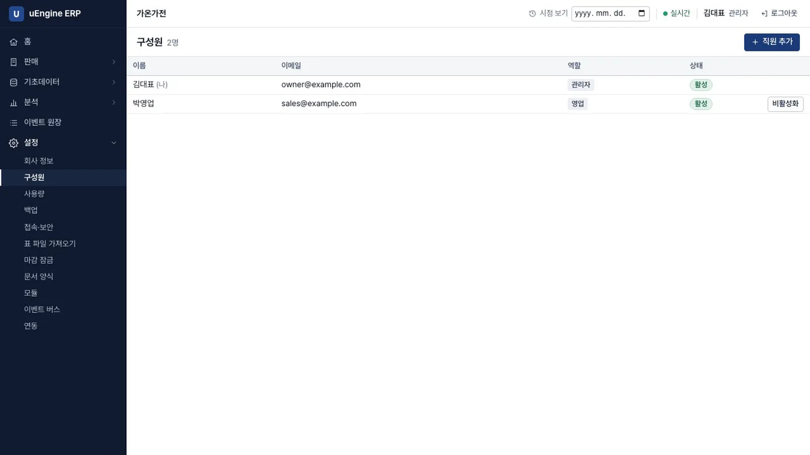
구성원 - 견적 만들기. 견적·주문 → 새로 만들기에서 고객
가온마트를 고르고, 줄 추가로에어서큘레이터를 고른 뒤 수량을3으로 입력합니다. 가격과 세금은 서버가 계산합니다. 공급가액 267,000, 세액 26,700, 합계 293,700이 됩니다.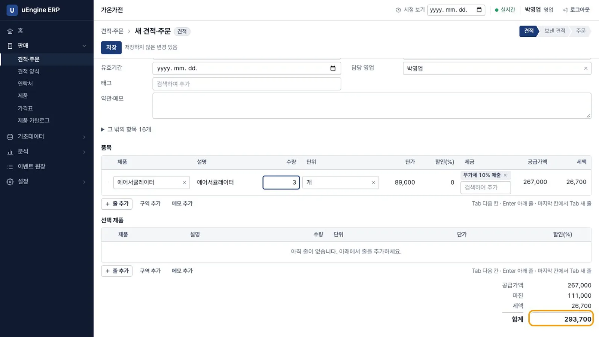
견적 - 보내고 확정하기. 저장을 누르면 번호(
S00001)가 붙습니다. 견적 보내기를 누른 뒤 주문 확정을 누릅니다. 위쪽 단계 표시가 견적, 보낸 견적, 주문으로 옮겨 갑니다. 재고와 청구 모듈이 꺼져 있으니 납품 상태와 청구 상태 칸은 화면에 없습니다.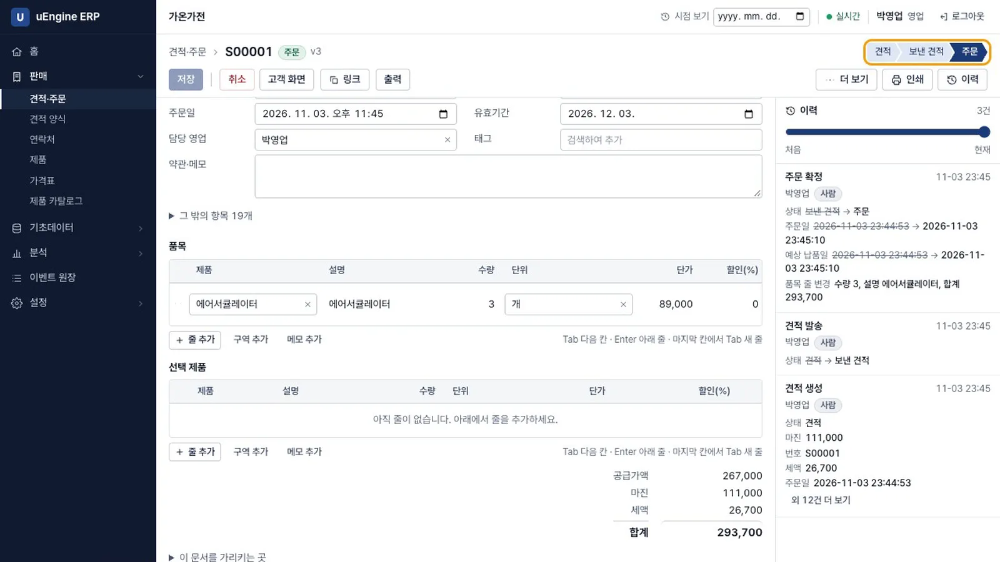
주문 확정 - 분석 화면 보기. 분석 → 예측·what-if를 엽니다. 모델은 세 상태 중 하나입니다. 지역·제품·시즌 통계는 사용 가능, 판매 기준 수요 예측은 근거 부족(
판매 15개월 필요 (지금 1개월)), 품절 보정 수요 예측은 잠김(재고 모듈을 켜면 열립니다)입니다.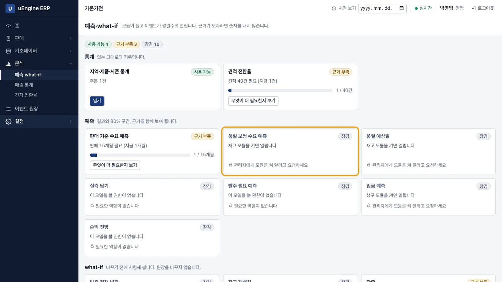
분석 화면
확인 문제#
앱에 넣는 키가 공개돼도 괜찮은 이유는 무엇인가요?
Publishable 키는 노출되어도 되는 값입니다. 접근은 로그인 토큰과 행 수준 보안으로 제한합니다. 공개 키만으로는 표를 읽을 수 없으며, 설치 SQL도 직접 실행해야 합니다. 비밀 키(sb_secret_)는 다르므로 앱이 받지 않습니다.
재고 모듈이 꺼져 있는데 주문을 확정하면 재고는 어떻게 되나요?
아무 일도 일어나지 않습니다. 판매 모듈은 재고를 모르고 이벤트만 남깁니다. 주문 화면에는 납품 상태 칸도 없습니다. 재고를 나중에 켤 때 고른 날짜 이후의 미납품 주문을 출고 대기로 가져올 수 있습니다.
판매 기준 수요 예측이 숫자 대신 "근거 부족"이라고 하는 이유는 무엇인가요?
모델마다 필요한 근거가 있습니다. 이 모델은 판매가 있었던 달 15개월이 필요합니다. 모자라면 숫자만 내놓고 틀리는 대신, 무엇이 얼마나 더 필요한지 보여 줍니다.